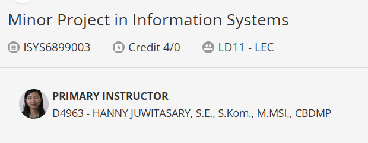
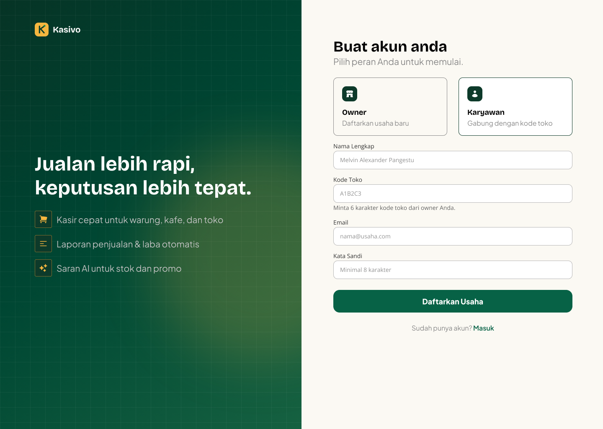
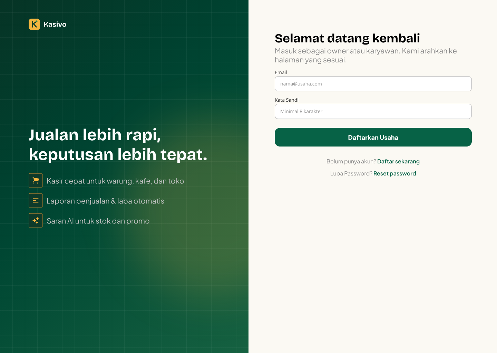
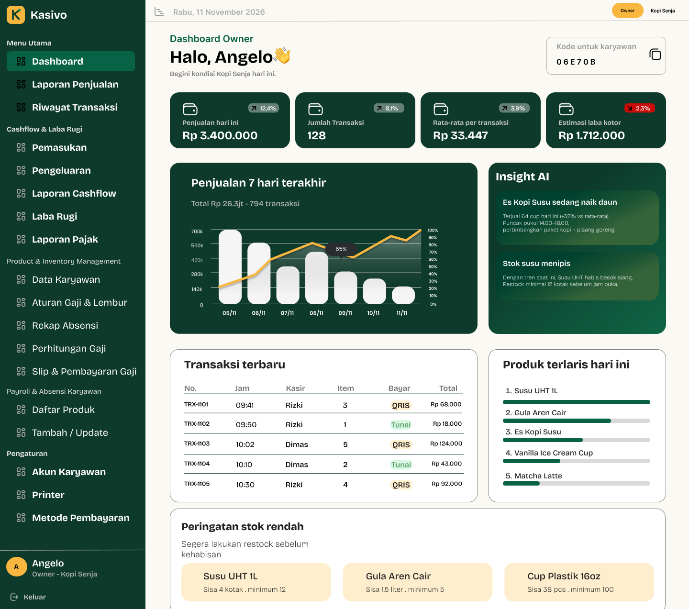
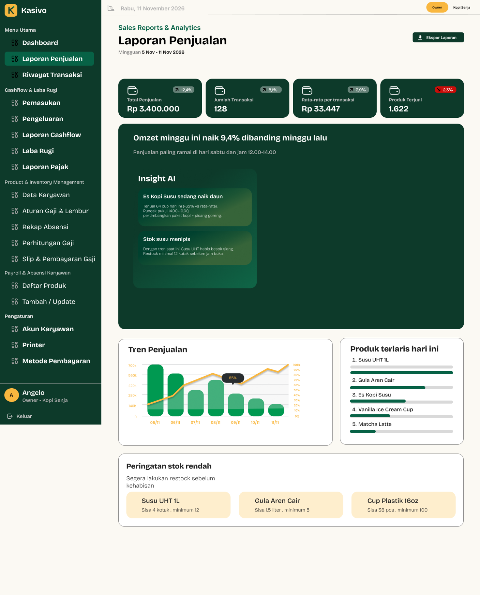
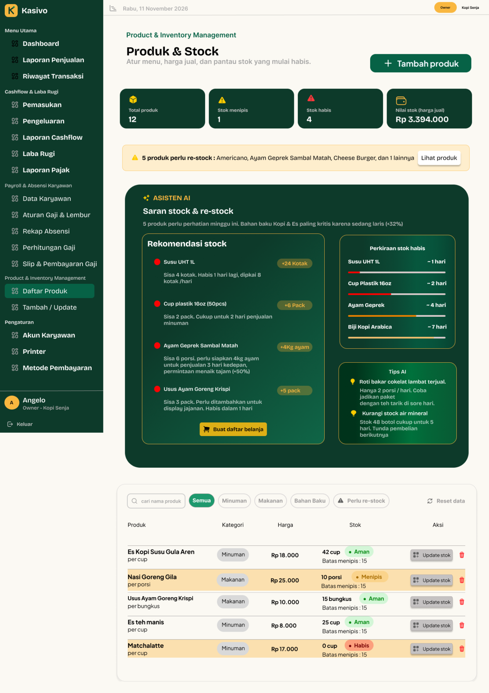
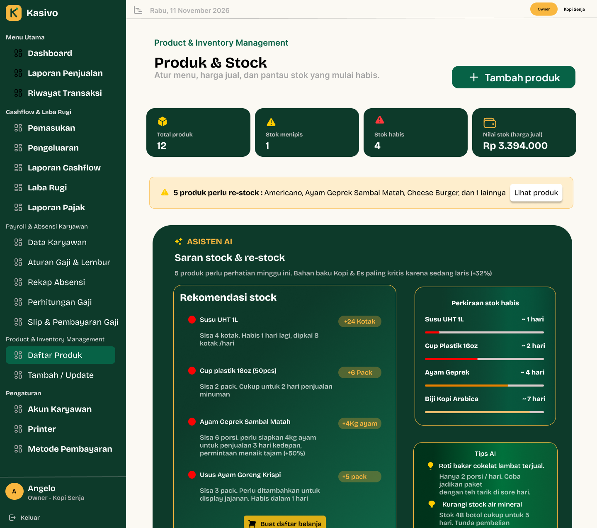
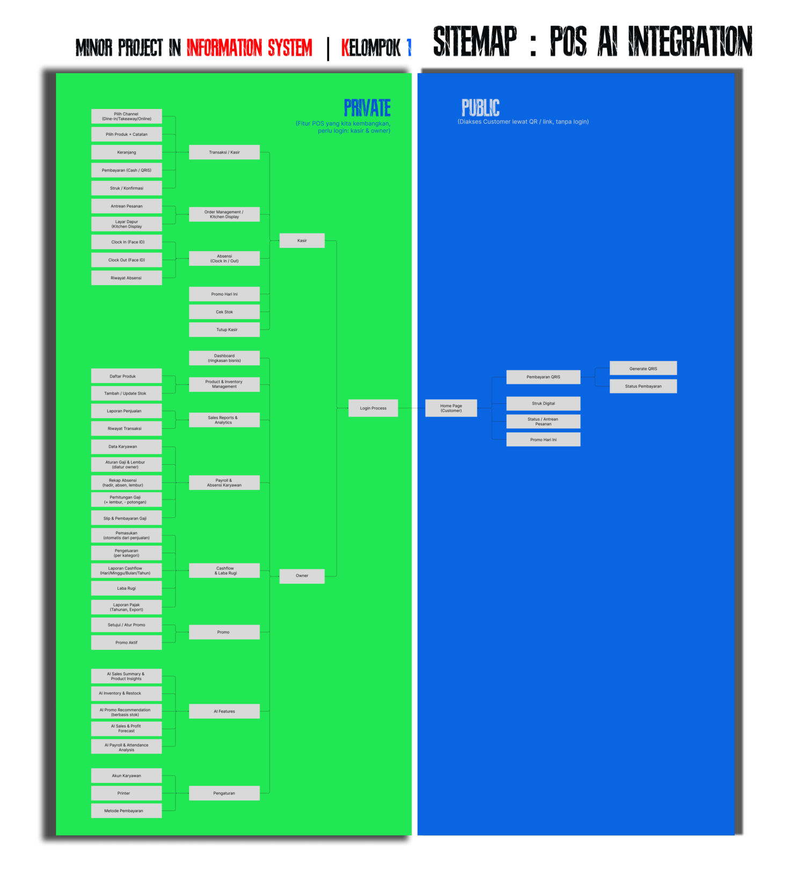
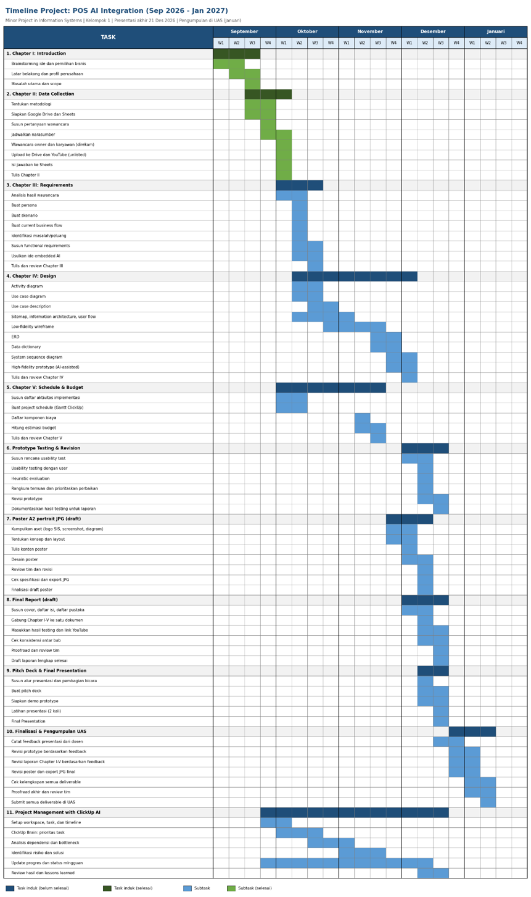

Friction in daily work
The project addresses repetitive tasks, human error, inaccurate data, limited synchronisation, and conventional POS features that do not adequately support specific operational needs.
Minor Project in Information Systems
In ProgressKasivo explores how a POS application could connect everyday operations with clearer information and understandable AI-assisted recommendations for business owners.
Course objective: To develop a project that contributes to solving real-world problems faced by communities through the application of business and information systems concepts.
Primary instructor: Hanny Juwitasary, S.E., S.Kom., M.MSI., CBDMP.

Project at a Glance
Kasivo is an in-progress AI-powered POS application concept for medium-sized businesses.
Repetitive tasks, recording errors, inaccurate data, and limited synchronisation can complicate operations and business analysis.
The project aims to streamline daily work and support more informed business decisions.
I designed the Product & Stock interface in Figma, including stock monitoring and proposed AI-assisted replenishment guidance.
Our team conducted interviews and developed a sitemap and wireframes, with POS interface designs created in Figma.
The design must connect staff workflows, reliable inventory information, and understandable recommendations for owners.
Intended users are business owners and employees; customers are also considered in the proposed public access area.
Current outputs include interview guides, a sitemap, and UI designs; the project and its documentation remain incomplete.
Problem and Proposed Solution
The project addresses repetitive tasks, human error, inaccurate data, limited synchronisation, and conventional POS features that do not adequately support specific operational needs.
When operational records are unreliable or poorly connected, the problems compound. Owners have a harder time understanding performance and making informed business decisions.
Kasivo proposes bringing transactions, stock information, reporting, and employee administration into one application, with AI-assisted explanations and recommendations that owners can understand.
Progress to Date
The following stages reflect the work reported so far. Later activities in the project roadmap remain planned work.
–
All team members participated in interviews with MSME business owners and employees. Separate guides explored operational routines, POS difficulties, stock management, decision-making, and potential AI support.
The team’s design work covers the information structure, wireframes, and user interface. This showcase currently presents the sitemap and selected UI screens. My individual contribution is the Product & Stock menu design.
Interface Design · Figma
Explore the original design images below. Open any image to zoom, navigate the gallery, or view the full-size original. The screenshots present interface mock-ups, including example figures and proposed recommendations.

Introduces the proposed POS experience and directs new or returning users towards registration or sign-in.
Explore Design
Distinguishes business registration from an employee joining an existing store through a six-character store code.
Explore Design
Provides a shared entry point intended to direct owners and employees to the appropriate workspace after sign-in.
Explore Design
Brings sales indicators, transaction activity, stock alerts, and proposed AI insights together to support a quick operational overview.
Explore Design
Connects weekly performance, sales trends, product rankings, and proposed recommendations, with a report export action.
Explore Design
Displays total products, stock conditions, stock value at selling prices, search and category filters, and product-level stock actions.
Explore My Design
Shows how owners could prioritise purchases using suggested quantities, estimated stock coverage, and guidance for slow-moving or overstocked items.
Explore My DesignInformation Architecture
The sitemap defines the proposed private POS area and a public customer area accessible through a QR code or link without signing in.
Transactions and payments, receipts, order queues, kitchen display, attendance, stock checks, promotions, and cashier closing.
Dashboard, inventory, sales reports, transaction history, payroll and attendance, cash flow, profit and loss, tax reports, promotions, and settings.
QRIS payment and payment status, digital receipts, order status or queue information, and current promotions.

The proposed AI scope includes sales and product insights, inventory and restocking, stock-based promotion recommendations, sales and profit forecasts, and payroll and attendance analysis.
Explore SitemapResearch Materials
Separate guides were used for owners and employees. The supplied files are blank interview templates: their answer fields are empty. They document the questions and research approach, rather than interview responses or validated findings. English translations of the prompts are available below.
Explores business processes, POS history and costs, operational difficulties, stock decisions, potential AI assistance, and trust in recommendations.
Download Original Owner TemplateExplores everyday cashier tasks, stock availability, time-consuming interactions, recording errors, and the possible usefulness of low-stock alerts.
Download Original Employee TemplateProject Roadmap
The original roadmap covers research, requirements, design, scheduling and budgeting, prototype testing, revision, reporting, presentation, and submission. Its dates extend into January 2027 for final submission activities; the stated course and project period remains 7 September–21 December 2026.

The roadmap distinguishes main tasks and subtasks and includes planned project management activities using ClickUp AI.
Explore TimelineProject Team
The project context, interview process, sitemap, roadmap, and general application screens are presented as teamwork. The Product & Stock menu is identified separately as my design contribution to date.